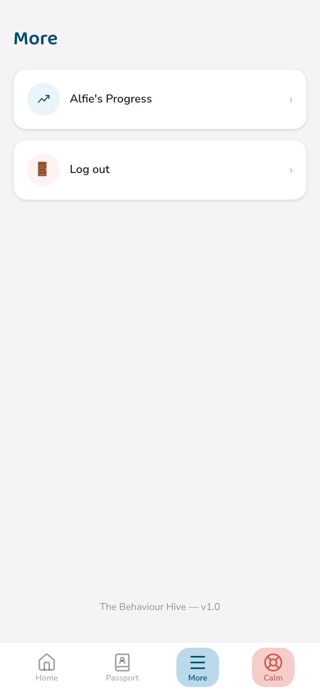
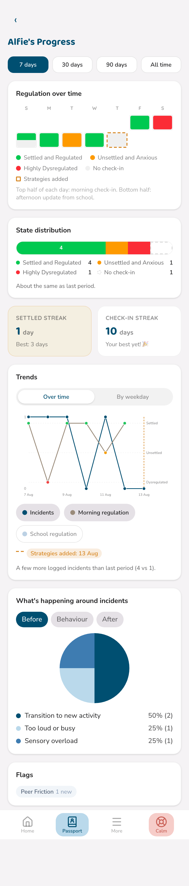
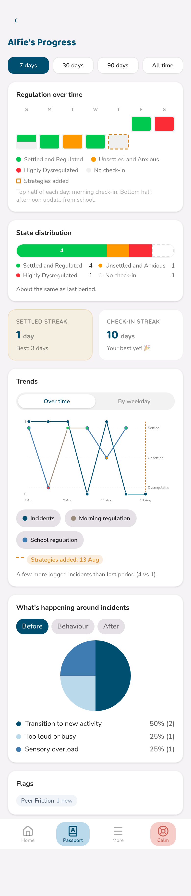
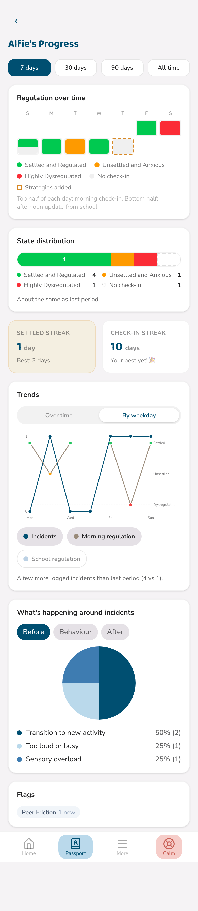
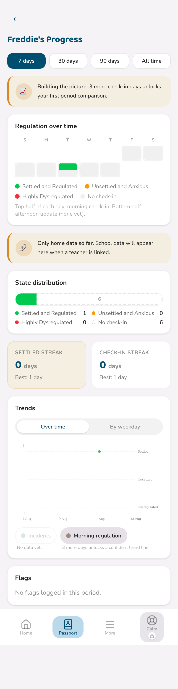
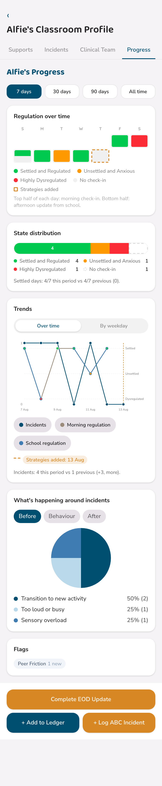
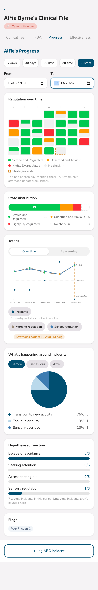

The pattern behind the days, made visible.
For technical help, contact daniel@thebehaviourhive.com
Every morning check-in and every end-of-day update quietly builds a picture over time — Progress is where that picture becomes visible, instead of scattered across individual days you'd have to remember.
You'll find it from the More menu, under your child's name.

Progress is built from a few simple pieces, stacked top to bottom.
A row of coloured squares, one per day — the top half is the morning check-in, the bottom half is school's afternoon update. A small dashed square marks any day a new strategy was added to the passport, so you can see whether things shifted around that point.

Underneath, the same information becomes a line graph you can actually read trends from — with three series you can turn on or off: Incidents, Morning regulation, and School regulation.

Prefer to see it by day of the week instead of by date? Switch views with one tap.

Two small counters track your current run — settled days in a row, and check-ins in a row — alongside your best-ever streak of each. A gentle nudge, never a scoreboard.
A brand new passport, or a quiet week of logging, doesn't produce a broken-looking page — it produces an honest one.

Every message here tells you exactly what's missing and roughly how much more logging unlocks the next level of detail — a period comparison, a confident trend line, and so on. Nothing is ever presented as a confident pattern on too little data.
The same Progress view sits inside a pupil's classroom profile, under its own tab — built from exactly the same morning check-ins, end-of-day updates, and incident logs, so home and school are always reading the same picture.

A teacher's view is scoped to what they're already able to see elsewhere in the app — nothing from the child's clinical file leaks in through Progress that isn't already visible on the passport itself.
Clinicians see everything a parent and teacher do, plus two things unique to case review: a genuinely custom date range, and a breakdown of hypothesised behavioural function over time.

The function breakdown reads tagged ABC incidents from the period in view and shows the proportion attributed to each hypothesised function — escape, attention, tangible, sensory, and so on. Untagged incidents are deliberately excluded from this count rather than guessed at, and the page says so plainly.
A few common questions about Progress specifically.
For technical help, contact daniel@thebehaviourhive.com